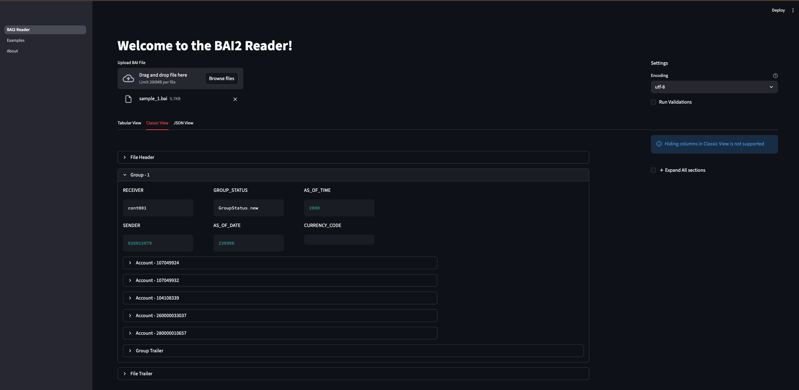

BAI2 Reader
The BAI2 file format is a standardized, comma-delimited plain text (.txt) format developed by the Bank Administration Institute for electronic cash management, balance reporting, and bank reconciliation. It uses specific record types (01-99) to detail file headers, group headers, account summaries, and transaction details, often including multiple bank accounts in one file.
Introduction to BAI
- Comma-separated, with a slash (/) to denote the end of a record line.
- Common Record Codes:
- 01: File Header
- 02: Group Header
- 03: Account Identifier
- 16: Transaction Detail
- 49: Account Trailer
- 98/99: Group/File Trailers
- 88: Continuation
Sample nested structure for a BAI2 file. - File can have multiple section of - Groups : meaning multiple sections of 02 -> 98 - Accounts with in each group : meaning multiple sections of 03 -> 49 - Transactions with in each Account : meaning multiple sections of 16 followed by 88 - 88 is a continuation record that applies only to 03 Accounts and 16 Transactions, and we can have multiple 88 meaning multiple lines of summary - Some banks don't send 49, 98 Trailer records so they are treated optional
├── 01 File Header
│ ├── 02 GROUP header
│ │ ├── 03 Account Identifier 1
│ │ │ ├── 88 Account Summary/ continuation record
│ │ │ ├── 88 Account Summary/ continuation record
│ │ │ ├── 16 Transaction 1
│ │ │ │ ├── 88 Transaction Summary/ continuation record
│ │ │ │ ├── 88 Transaction Summary/ continuation record
│ │ │ │ ├── 88 Transaction Summary/ continuation record
│ │ │ ├── 16 Transaction 2
│ │ │ │ ├── 88 Transaction Summary/ continuation record
│ │ │ │ ├── 88 Transaction Summary/ continuation record
│ │ │ │ ├── 88 Transaction Summary/ continuation record
│ │ ├── 49 Account Trailer
│ │ ├── 03 Account Identifier 2
│ │ │ ├── 16 Transaction 1
│ │ │ │ ├── 88 Transaction Summary/ continuation record
│ │ │ │ ├── 88 Transaction Summary/ continuation record
│ │ │ │ ├── 88 Transaction Summary/ continuation record
│ │ ├── 49 Account Trailer
│ ├── 98 GROUP Trailer
│ ├── 02 GROUP header 2
│ │ ├── 03 Account Identifier 1
│ │ │ ├── 88 Account Summary/ continuation record
│ │ │ ├── 16 Transaction 1
│ │ │ │ ├── 88 Transaction Summary/ continuation record
│ │ │ │ ├── 88 Transaction Summary/ continuation record
│ │ │ │ ├── 88 Transaction Summary/ continuation record
│ │ ├── 49 Account Trailer
│ │ ├── 03 Account Identifier 2
│ │ │ ├── 16 Transaction 1
│ │ │ │ ├── 88 Transaction Summary/ continuation record
│ │ │ │ ├── 88 Transaction Summary/ continuation record
│ │ │ │ ├── 88 Transaction Summary/ continuation record
│ │ ├── 49 Account Trailer
│ ├── 98 GROUP Trailer
├── 99 File Trailer
Usage
Installation
pip install bai2-reader
pip install 'bai2-reader[all]' -- to install all features
pip install 'bai2-reader[ui]' -- install if you want to explore the UI
pip install 'bai2-reader[cli]' -- install if you want to run CLI commands to parse and export
pip install 'bai2-reader[excel]' -- install only if you want to export to excel
- Poetry based
poetry add bai2-reader
poetry add 'bai2-reader[all]' -- to install all features
poetry add 'bai2-reader[ui]' -- install if you want to explore the UI
poetry add 'bai2-reader[cli]' -- install if you want to run CLI commands to parse and export
poetry add 'bai2-reader[excel]' -- install only if you want to export to excel
# to export BAI to formats like CSV/JSON/Parquet
bai2 --help
# to export BAI file using UI run below. this will open the UI automatically
bai2-ui
Python Based
# import the package
from src.bai2_reader.reader import BAI2Reader
# create a reader object
reader = BAI2Reader(run_validation=False, encoding='utf_8')
# read and write using the reader object
reader.read_file('app/src/samples/sample_1.bai') \
.write_data(output_file_name='sample_1.csv', output_format='json')
- If you have multiple files to be parsed then loop them
import glob
from src.bai2_reader.reader import BAI2Reader
from src.bai2_reader.enums import OutputFormat
# create a reader object once, and reused it for all files.
# remember : the default values that you have passed to the below BAI2Reader
# applies to all files that are read using its object `reader`
reader = BAI2Reader(
run_validation=False,
encoding='utf_8',
output_format=OutputFormat.PARQUET
)
for file in glob.glob('app/src/samples/*.bai'):
# read and write using the reader object
reader.read_file(file).write_data()
- If you just want to read and access the elements
# import the package
from src.bai2_reader.reader import BAI2Reader
# create a reader object
reader = BAI2Reader(run_validation=False, encoding='utf_8')
# Only read and get bai_data for other activities.
# bai_data is of type Pydantic model
bai_data = reader.read_file('app/src/samples/sample_1.bai').bai_data
CLI
- To get help run:
bai2 export --help
% bai2 export --help
Usage: bai2 export [OPTIONS]
Export BAI2 file to structured formats
╭─ Options ────────────────────────────────────────────────────────────────────────────────────────────────────────────────────────────────────────────────────────────────────────────────────────────────────────────────────────────────────────────────────────────────────────────────────────────────────────────╮
│ * --input-files TEXT Input BAI2 file, if you have multiple files pass them as comma separated. [required] │
│ --run-validation --no-run-validation Run Validations to perform the counts checks in trailers [default: run-validation] │
│ --output-dir TEXT Output path where the output files have to be stored [default: output] │
│ --output-file-names TEXT Custom output file name if you want, use comma separated if you are passing multiple input files │
│ Default : '{input_filesNAME_WITHOUT_EXTENSION}_{DATETIME_IN_UTC}.{OUTPUT_FORMAT}' │
│ --output-format [csv|json|excel|parquet] Output forma [default: csv] │
│ --encoding TEXT Input BAI2 file [default: utf-8] │
│ --write-args TEXT Write args that will be passed to pandas to_csv/to_json/to_parquet functions │
│ Example : '{"sep": ",", "compression": "gzip"}' │
│ Note : Make sure you wrap the strings in double quotes. :) │
│ --help Show this message and exit. │
╰──────────────────────────────────────────────────────────────────────────────────────────────────────────────────────────────────────────────────────────────────────────────────────────────────────────────────────────────────────────────────────────────────────────────────────────────────────────────────────╯
Examples
- Single File export
bai2 export --input-files app/src/samples/sample_1.bai
- Multiple files export
bai2 export \
--input-files app/src/samples/sample_1.bai,app/src/samples/sample_2.bai \
--output-format json \
--output-file-names output_file_1.json,output_file_2.json \
--output-dir 'output_path_here'
- Export with custom write arguments
bai2 export \
--input-files app/src/samples/sample_1.bai \
--output-format json \
--write-args '{"index": false, "orient": "records", "indent": 4}'
UI for Analysis
UI is created using Streamlit app. The UI runs in your local machine and allows you to explore the BAI files.
# need to install UI dependencies
pip install 'bai2-reader[ui]'
# Start the UI
bai2-ui
You get to see 3 different views in the UI
- Tabular View
- Classic View
- JSON View
Tabular View
Flattens the BAI files to a tabular format. Table allows you to filter and search transactions.

Classic View
Allows you to expand and collapse each section of BAI file.

JSON View
Allows you to see the BAI data in JSON format.

Note : You can only explore one file at a time.